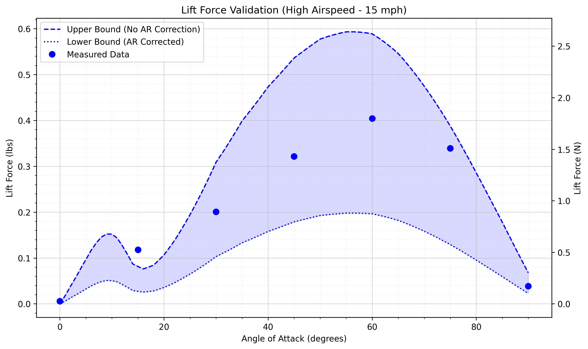
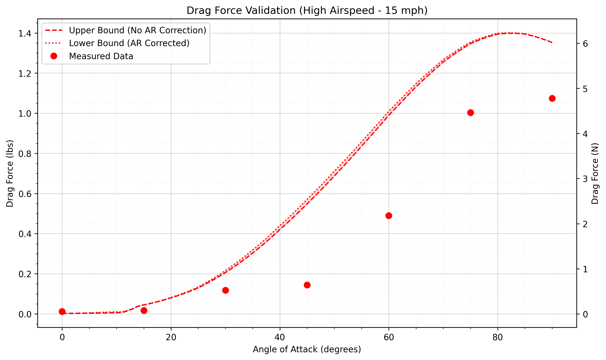
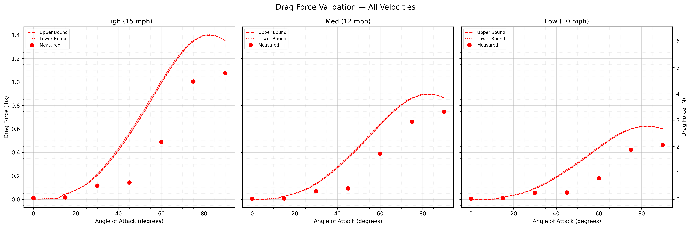

Exhibit in Action
Users interact with wind tunnel by adjusting airfoil angle of attack and fan speed, directly feeling lift and drag forces through handle.
Testing and Validation
The plots below compare aerodynamic forces predited by physics-based models against forces measured during testing. The models use real wind tunnel data from Sheldahl & Klimas (1981) interpolated to Re = 100,000, covering the full 0°–90° angle of attack range continuously.
Rather than a single prediction line, the model outputs a bounded region representing genuine physical uncertainty in how the tunnel walls affect the airfoil behavior. The upper bound assumes the walls act as perfect end plates, suppressing tip vortices entirely. The lower bound applies a full Prandtl lifting line aspect ratio correction for AR = 1, treating the airfoil as if in free air with no wall benefit. The true behavior lies somewhere between these limits.
Lift Force Validation

Lift force measured at 7 angles of attack at 15 mph freestream velocity, compared to model predictions.
Measured lift forces generally fall within the predicted band across most angles, confirming the model captures correct aerodynamic trends. The 15° point sits above the upper bound. Thids is caused by the wall proximity and inlet turbulence suppressing the sharp stall transition predicted by 2D theory. No distinct stall was felt during testing, consistent with the stall being smeared out by tunnel effects rather than occurring as a sharp separation event.
Drag Force Validation

Drag force measured at 7 angles of attack at 15 mph freestream velocity, compared to model predictions.
Good agreement at low angles (0°–30°). At higher angles, measured drag falls below predictions due to solid blockage. At 90° the airfoil occupies approximately 56% of the test section area, constraining the flow field and reducing measured drag compared to free-air predictions. Standard blockage corrections are only valid below ~10% blockage. The airfoil was intentionally designed large so children can feel meaningful forces. This causes an inherent tradeoff between educational effectiveness and measurement accuracy.
Lift Force Speed Comparison

Lift force plots over three distinct velocities
The data at different speeds all agree with each other. Speed only changes the magnitudes of the forces felt.
Drag Forces Speed Comparison

Drag force plots over the three distinct velocities
Similar to lift data, the velocity is shown to only affect the magnitude of the forces, not the overall shape of the curves.
Data Source
[1] Sheldahl, R. E., & Klimas, P. C. (1981). Aerodynamic characteristics of seven symmetrical airfoil sections through 180-degree angle of attack for use in aerodynamic analysis of vertical axis wind turbines. Sandia National Laboratories. SAND80-2114.
https://ntrs.nasa.gov/citations/19810011010 — Data extracted from Table 4, pages 44–45. Re = 100,000 dataset interpolated logarithmically between measured Re = 80,000 and Re = 160,000 values.